A Guided Tour
The purpose of this tutorial is to get you familiar with the INET framework, a simulation model suite for TCP/IP and Internet-related protocols, written for the OMNeT++/OMNEST simulation environment.
This tutorial is based on the ARPTest example simulation. You can find this example simulation in the INET Examples directory (inet/examples/ethernet/arptest2/).
You can find the arptest2 project folder in the project explorer panel of the OMNeT++ IDE. To run the simulation, right click on omnetpp.ini and select run as, and click OMNeT++ Simulation. In the Set Up inifile Configuration, make sure ARPtest is selected as config name, and click OK.
The picture you see will look like this.
This is the realtime simulation environment (tkenv/qtenv). The bottom panel displays log messages from the simulation model (output from ev << statements in the C++ code will write there), and the left-hand panel displays the model objects in a foldable tree form. There's a status bar at the top and at the bottom (we'll look at it later), and a toolbar to access frequently used functions of the GUI. The central panel displays the simulation model.
Click on the "Run" button on the toolbar, or hit F5.
When registering the protocols at the network layers of the two hosts finishes, simulating the network operation begins. In the model scenario, the client computer (laptop icon) opens a TCP connection to the server (server icon) at 1s, and starts sending a large data stream at 1.1s. This is configured in the ARPTest.ned file:
**.client*.tcpApp[0].tOpen = 1s
**.client*.tcpApp[0].tSend = 1.1s
The server will just echo the data sent by the client.
Since the underlying network is Ethernet, before being able to send the TCP SYN packet the client has to perform an ARP request to learn the MAC address for the default router. After some more messaging, the TCP connection will be established and data transfer begins.
We'll explore these happenings in the network later, but for now just sit back and watch the simulation. You can make the animation faster or slower by adjusting the slider at the top of the network window.
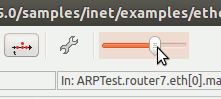
You can stop the simulation by clicking the red "STOP" traffic sign icon (or by hitting F8), and resume it ("Run" icon or F5).
The "Fast" icon or (F6) will turn off message animation and update the graphics only in every 500 milliseconds or so (the exact number can be configured in the Simulation Execution dialog, File menu/Preferences/General tab, accessible from the toolbar as well, with the wrench symbol). The "Express" icon provides the highest speed: it turns off all GUI functions while the simulation is running, even writing to the log is turned off. Express mode updates the display every 1000 miliseconds or so (also configurable in Simulation Options).
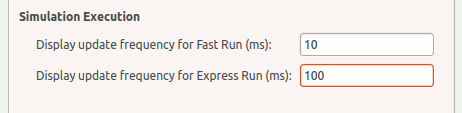
In Express mode you can only stop the simulation by clicking the "Big Red STOP Button" (see below). Simulation speed in Express mode may significantly depend on the state of the "auto update inspectors" checkbox.
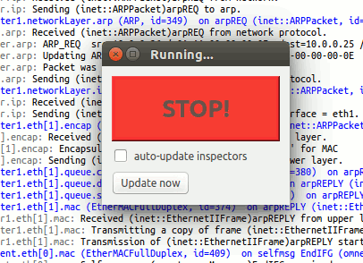
You can read the speed of the simulation on the the main window status bar. Ev/sec tells you how many events your CPU crunches in a second -- this depends on the strength of your hardware, on the amount processing (C++ code) to be done for an average event (refer to the handleMessage(cMessage *) functions in the model source), and on the run mode (Normal, Fast or Express). It is not unusual for the Express mode to be 100-200 times faster than Fast mode.
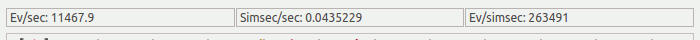
The other two readings on that status bar are simsec/sec (how many simulated seconds the model progresses in one "real" second) and ev/simsec (how many events your model contains per simulated second). The simsec/sec value is useful for estimating how long your simulation will take. Ev/simsec is independent of whether you use Normal, Fast or Express mode, and it only depends on the nature and size of your model (ATM cell-level simulations will have a few magnitudes higher ev/simsec values than call center simulations.)
While in Expess mode, you'll probably get the following dialog after a while:
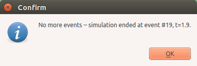
"No more events" is one way a simulation can terminate normally (i.e. not with an error). It means that there's nothing more to simulate -- in our simulation this occurs when the client has successfully closed the TCP connection and finished its operation, and there're no more packets underway and no timers running anywhere in the whole model.
Other simulations may end with the "Simulation time limit reached -- simulation stopped" message which means that the simulation time configured in omnetpp.ini has been reached. (For completeness: other possibilities include "CPU time limit reached," and "Simulation stopped with endSimulation()" meaning that some component in the model called the endSimulation() C++ function -- for example when it detects that desired statistical accuracy has been reached).
In both cases you can restart the simulation using the "Rebuild network" command on the Simulate menu. In fact, you can do that any time to start over.
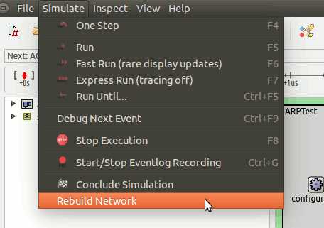
Note that some simulation models (none in INET, hopefully) may crash when you restart the simulation. This is usually due to badly written destructor code in the model C++ sources.
Now that we've dealt with the basics, we can go back to our ARPTest network model.
You've probably seen something like this:
If a link is yellow, that means the node is transmitting on the link (if a node has collided and while it's backing off, the link is colored red. This is not likely to happen in this simulation, because Ethernet nodes sense when one of them is transmitting on the shared channel, and don't transmit simultaneously). Link coloring has been programmed as part of the Ethernet model (the EtherMAC module).
The wandering red frame (around router1 on the screenshot) has nothing to do with Ethernet -- it simply indicates the location of the current/next event in the model, as dictated by the basic event processing algorithm of discrete event simulation.
I bet you've found it out already, but here it is for the record: you can double-click on a node (client, server, router) to see its internals.
Bottom up, the client model contains:
A router is similar, but obviously it has nothing from L3 up. (You also see no routing protocols -- routing is static in this model.)
If you further double-click on these components (TCP, UDP, etc.), you can view what modules they are made up from. You can use the arrow buttons in the simulation model window to navigate levels (ie. go up a level). After some levels you get an empty window. It means that the component is implemented in C++, and cannot be subdivided any further (it is a simple module, as opposed to compund modules which are composed of submodules). If you right click on the simple module and select Open Details, an inspector window like this comes up:

The ARPTest simulation is quite complex in that it has TCP, IP, ARP and Ethernet in it. In this walkthrough we'll go for ARP, but the steps you learn will be useful for exploring other protocols as well.
If we are interested in ARP, it's a bit annoying that we have to wade throught all those protocol registration events until we get to the first ARP request at 1s. Luckily, you can use the "Run until..." function to fast-forward past them.
Restart the simulation (Simulate|Rebuild network), then click the "Run until..." icon on the toolbar.
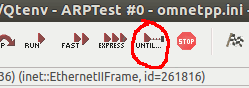
When protocol registration finishes we are still at 0s simulation time, but the first ARP request is around 1s, so you can safely enter anything in the Run until dialog between 0 and 1s, so now let's enter 1ms.

After clicking OK, the simulation progresses past the protocol registration period in no time. Then, both the red frame around the laptop icon (the next event marker) and the status bar at the top will show that the next event is going to be a timer event, take place in the client PC's tcpApp, at t=1s simulation time (which will be 1s from the current time, as indicated by the +1s in brackets). Opening "scheduled-events" in the object tree (left side of main window) will also reveal that we have only one event. Double click on the event to open the inspector window (or single click and check out the property viewer at the bottom left). You can switch to flat mode at the top of the panel to see the details of the event object.
If you right click on a module and choose Open Graphical View, a separate window is opened displaying the module's insides. This is a useful feature because multiple views can be open at the same time. Let's go into the client computer and open a graphical view of networkLayer. Now we can observe as packets arrive at the client module and the path they take in the network layer.
Pressing F4 (single-step) repeatedly will take you through the next events. You'll see as the application tells TCP to open a connection, as TCP obeys and sends a SYN (TCP connection request) packet. You can follow this packet as it enters the network layer. You will find the SYN packet sitting at the input of the IP module. The IP module is doing a function call the routing table one level up and the arp module to the right. This is indicated by the dotted lines (this isn't part of normal packet traffic, but how network operation is implemented behind the scenes).
Here we are at the beginning of the interesting part. You may actually take a note that we are at event #25 (it's displayed in the top line of the main window status bar) so that next time you can quickly get here using the "Run until..." dialog (it can stop either at a simulation time or at an event number -- or if you enter both, it'll stop at whichever comes first. Note that you enter the value of the next event you want to observe -- so in this case we enter 26 in the run until dialog).
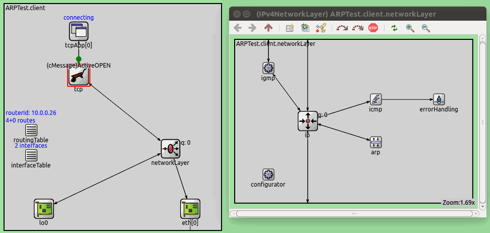
You can find the Run until next event in this module button on the toolbar at the top of the model window. This is a very useful tool if you want to fast-forward to the next thing that will happen in the given module. There is also a fast run version.

We can see what's going on by checking out the module logs. These log messages (output via ev << from the C++ code) will appear in the log panel at the bottom of the main window, but that'll soon be useless because other modules dump their output there too. Luckily, we can filter the logs so we can concentrate on messages from modules we are interested in now -- we can do that with the filter window contents button at the top right of the logs panel. Here we can select which module's logs we want to display -- select arp and ip from client/networkLayer.
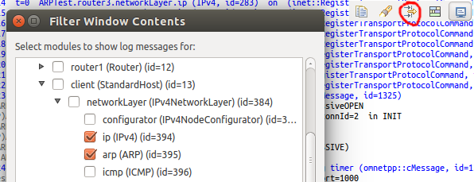
So we are at event #25, let's press F4 (or click at the step button) for the next event, and let IP process the SYN packet. You'll see that:
The logs will look like this:

ARP maps L3 addresses (IP address) to L2 addresses (Ethernet MAC address). It uses a lookup table (ARP cache) for this purpose, but if an IP address is not found in the table, ARP has to ask around by sending a broadcast ARP Request. That's what we have seen here. Let's check it in detail!
Click on the ARP request packet to view it's details in the property viewer panel (bottom left of the main window).
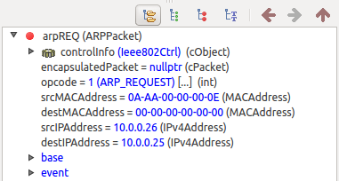It shows the contents of the ARP packet: source MAC address, destination MAC address, source IP address, destination IP address. The source MAC and IP addresses are our own addresses (in the model, autoconfigured MAC addresses begin with "0A AA"); the destination IP address contains the address to be resolved, and the destination MAC address is empty because that's what we're requesting.
The ARP packet is a single C++ object, with its class ARPPacket having an int _opcode data member, int opcode() and setOpcode(int) functions, and similar data and functions for the other data fields as well. However, the class was not hand-coded but generated from a .msg file, which has a very concise format:
// file: ARPPacket.msg
message ARPPacket
{
fields:
int opcode enum(ARPOpcode);
MACAddress srcMACAddress;
MACAddress destMACAddress;
IPAddress srcIPAddress;
IPAddress destIPAddress;
};
Definition via a .msg file not only saved a lot of programming effort, but it was also necessary for the packet's content to be displayed in the Details.
So far so good, but how do lower layers (Ethernet) know which MAC address the ARP request should be sent to? That's not part of the packet!
This information is attached to the packet in small data structure called "control info". Control info is also a C++ object and similarly to packets, its C++ source is generated from .msg files. You can view the contents of the control info attached to this ARP packet by clicking "Control info" in the property viewer.
// file: EtherCtrl.msg
class EtherCtrl
{
fields:
MACAddress src; // used with ETHCTRL_DATA
MACAddress dest; // used with ETHCTRL_DATA
int etherType; // used with ETHCTRL_DATA and EthernetIIFrame
int ssap; // used with ETHCTRL_DATA and EtherFrameWithLLC
int dsap; // used with ETHCTRL_DATA/REGISTER_DSAP/DEREGISTER_DSAP
int pauseUnits; // used with ETHCTRL_PAUSE
};
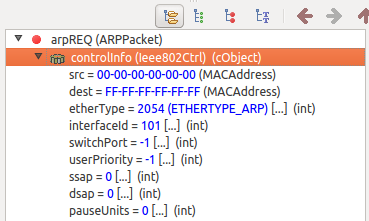
It says that source MAC address is not specified (all zero -- in this case it'll be filled in by Ethernet) and the destination MAC address is all FF's (the Ethernet broadcast address). SSAP and DSAP are unused here (they're for 802.3 frame type but we use Ethernet II frames in this simulation), and pauseUnits has also no significance (only used for telling MAC to send PAUSE frames). etherType is set to zero here.
While ARP resolution is pending, IP datagrams which wait for it have to be buffered somewhere. The IP module is storing the packets while waiting for ARP to finish. If you click on the IP module, you can see that it has a SYN packet queued.

You may double-click on the SYN packet, to view the datagram's contents (source and destination IP address, TTL, encapsulated protocol, etc.) in an inspector window. Here you can find the encapsulated TCP packet. Double click and you can explore the TCP header fields.
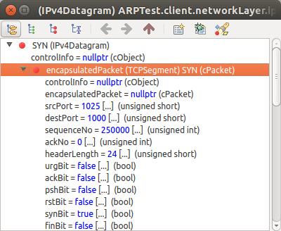You maybe be wondering what the ARP cache contains right now. No problem, we can check it out!
Click on the arp icon in client/networkLayer, and examine the property viewer.
The list reveals that we have several counters here for sent and received ARP requests etc -- and also the ARP cache. Double-click on the arpCache line. Another inspector will open, double click on elements to see the arp cache contents.

First of all, you'll notice that the cache contains what you'd probably expect: one entry, IP address 10.0.0.25, pending resolution.
The ARP cache is implemented with a standard STL map. You can check the source code in the OMNeT++ IDE. Press ctrl + shift + R to search for resources, and search for ARP.cc and ARP.h. In ARP.cc you can see that the key in the map is class IPAddress and the value is class ARPCacheEntry (or rather, a pointer to it). If you'd be looking in the C++ code to find out what makes STL map able appear like this in the GUI, you'd find only one extra statement in ARP.h: WATCH_PTRMAP(arpCache), plus << operators defined for IPAddress and ARPCacheEntry. That's all it takes -- the rest is up to the simulation environment.
But let us follow the ARP request further.
With a further F4 key (or "Step" toolbar button), the ARP request packet is sent down to the ethernet module. You can go into the module to see the packet at the input of the encap module. After another F4 key press, the encap will encapsulate the ARP request into an Ethernet II frame. You can verify by going into the queue module, and double clicking on the message and opening an inspector that the destination address in the frame has been set to broadcast (all FF's). The source address is still all zeros, it'll be set by MAC. You can also verify that the ARP packet has been indeed encapsulated in an Ethernet frame.
After a few more steps, the packet leaves the queue and through the MAC module, it is transmitted from the client. You can watch this if you go to the highest level. The packet moves to router 1. The packet animation signifies the start of packet transmission. Notice that after the packet moves to the router, the link turns yellow, meaning there is a transmission going on between the client and the router. Hit step once more and the link color goes back to normal, transmission of the frame is completed, this can be seen in the logs as well.
Note the Start of IFG period in the logs. IFG stands for Inter-Frame Gap in the Ethernet standards, and it is the time needed by older Ethernet hardware to switch from receive (carrier sense) mode to transmit mode. In the model, end of the IFG is marked with an event which can also be seen in "scheduled-events".
The end of the interframe gap period is implemented with a self message -- EndIFG in the scheduled events list. You can see it on the timeline at the top of the main window, and tell that it is going to take place 10 microseconds from now (you can also single click events in the timeline to view them in the property viewer and double click to open their inspector windows).
Most actions we've seen so far, from app's TCP Active OPEN command to encapsulation of the ARP packet into an Ethernet frame, took zero simulation time. We assumed that -- compared to other time periods occurring in the model -- they take such a short time that it is not worth modelling explicitly (they wouldn't make a difference in the simulation results).
However, the time an Ethernet frame transmission takes is interesting to us, and so is propagation delay on the cable (the cable may be long) -- so in fact we have four discrete points of time, and we need four simulation events to model them:
The message which you've seen mac having sent (the Ethernet frame message object in fact) represents the beginning of the frame. End of transmission is an event you'll find in "scheduled-events", it is a self-message scheduled by the transmitting mac:

The "start of reception" event will occur in the receiver of course, and will be represented by the arrival of the Ethernet frame message object. You can see in the first line of the status bar, in the "next event" field that it's going to be the next event, and will take place in router1's second interface (eth[1]).

Open the graphics for this Ethernet interface by double-clicking on router1, then on eth[1] (just follow the red frames which indicate the location of the next event).
Pressing F4 once more makes this mac process the event and go into "receiving" state -- its icon will also turn blueish to indicate it. From the frame length and the data rate mac has calculated the time the last bit will arrive (end reception), and scheduled an event accordingly (you can verify it in the "scheduled-events" list).


During the next few F4 keypresses, the client laptop mac will finish transmission, the router1's mac will complete reception, and it will pass up the frame to encap which in turn will rip the Ethernet header and pass up the ARP Request packet to arp.
In the next few event, arp will process the request. Hit F4. arp's log output will show what happened.

You can check the arp cache and see that a new entry has been added, as indicated by the logs:
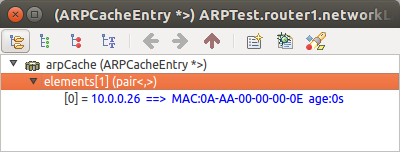
ARP took the source IP address and source MAC address, and added them to its own ARP cache. Then it had to determine whether to reply to the request. The destination IP address was did not belong to the router; however, proxy ARP is turned on (you can verify this in the ARP module's inspector window, "Parameters" section -- see below). With proxy ARP, the router has to reply to the ARP Request if it can route the address, and send back its own MAC address. That's what happened here.
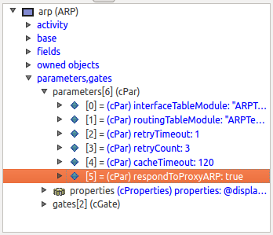
While ARP processed the request packet, you probably saw a red flashing arrow, like this:
It indicates ARP asking the routing table component whether the address 10.0.0.1 is routable, as part of the proxy ARP process. (More precisely, ARP asks which is the output port for that address -- if the reply is "none" it means the address is not routable). In the C++ code, what you've seen was the animation of a direct method call -- ARP module's C++ code invoked the int outportNo(IPAddress) method of the routing table object (class RoutingTable) with 10.0.0.1 as argument. It was the simulation environment which made this request visible in the simulation GUI.
The answer was probably "routable", because arp sent a reply. You can verify by opening the ARP Reply packet: source and destination fields have been swapped, and the now-source (formerly destination) MAC address field contains the MAC address of this interface.
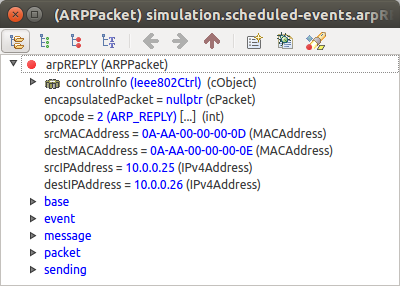
The next few F4 keypresses will transmit the ARP Reply over Ethernet back to the client's ARP.
Results of processing the ARP reply can be seen in the next screenshot. The MAC address of the router's Ethernet interface has been added to the ARP cache. ("age=0" in the cache entry is needed because after certain period of inactivity [120s configured here] the entry is considered obsolete and gets thrown out of the cache. In fact, the entry really stores last update time, but age is more practical when displayed.) The datagram carrying the TCP SYN segment that was wainting in the queue has been sent down to Ethernet for transmission.

You can even verify that the control info attached to the datagram indeed contains the MAC address just received via ARP.
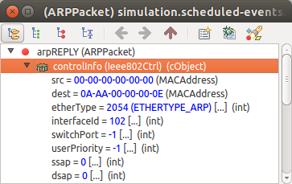
Now that ARP has done its job, you can hit F5 (or click "Run" on the main window toolbar), sit back and watch as the SYN packet makes its way to the server. It is still not any easy job for SYN, because this example network is full of distinct Ethernet segments, so it'll take still a series of ARP requests and replies get to the server.
You'd maybe think that the remote TCP's response, SYN+ACK will have easier job on the way back, because SYN paved the way for it. But not really: it was the IP addresses of routers initiating ARP resolutions that made it into the ARP caches, and not the client's IP address 10.0.0.26. So the series of ARP request/replies repeats as SYN+ACK progresses back to the client computer.
But further packets really don't have to go through ARP resolution any more.
After some time, the logs can be quite cluttered ,so you may want to use the Show message/packet traffic feature of the log panel to view packet traffic only. If you enter a module and switch to message/packet traffic view, the viewer shows packets that were send and received by that module. You can also filter which modules' traffic you want to examine. For example, you might be interested in traffic between the client and router 1 only -- you tick these two when you filter the modules, and you will get a result like this:

Whereas the logs are created by the ev << statements in the C++ code, this message/packet traffic view is created automatically by the simulation environment -- no additional code necessary. The useful thing about this feature is that you can filter and examine messages and packets even after the simulation has finished.
In the above guided tour, you've seen how to run a simulation model, view logs, examine packet contents, look at queues, and explore internal tables and variables. But what do you do if something is still not clear? If log messages do not give enough information to find out how the thing works?
The answer is: documentation. The INET framework's documentation essentially contains the full source code (!!!) -- in an organized, readable, searchable and cross-referenced manner. If you have the INET Framework demo, then you probably have the full documentation as well, in the Documentation/ folder. You can open it from the demo application too:

When you open it, you should see in your browser something like the picture below. I marked the possible starting points for exploring ARP. Basically, if you know what you're looking for (we know now), just click ARP on the "All modules" list on the left (or click "modules, simple" link on the top of that frame, and choose from the shorter list). If you don't know, you can start from an example network (here: ARPTest), and click on submodules until you find what you're looking for.

ARP's page itself doesn't tell us too much about the ARP protocol or this particular implementation (this may improve in the future), but it does tell that it's employed as part of EthernetInterface (and by following that link you can learn where, in turn, EthernetInterface is used, etc.) and also lists the parameters and gates (or ports) (further below, not shown in the screenshot). It also contains its NED definition (also further below), and what's important for us now, there's a link to the C++ documentation.

Click the "C++ documentation" link. The C++ documentation that emerges has been generated from commented C++ source by the Doxygen tool, with its INLINE_SOURCES option turned on. The sheer size and detail of the C++ documentation might be overwhelming to you, but not if you know where to start looking.
There are two good starting points: the handleMessage(cMessage*) member function, and the data structure used in the module (Doxygen lists data members under the Protected (or Public or Private) Attributes heading). handleMessage(cMessage*) is the function that gets invoked whenever a message (packet, etc) arrives at the module or a timer goes off (a message scheduled by the module itself comes back).

As a rule of thumb: whatever large number of functions you see in the documentation, always click at handleMessage() first. If the module code was well written, it'll lead you from there. Let's do that with ARP as well.

Function names are displayed in blue -- clicking one will take you to the code of that function. Combined with the browser's "Back" button, they offer a very convenient way to explore the source.
Here's what handleMessage() says: if the message that arrived is a self-message (expired timer), it can only be that an ARP request has timed out, and we'll handle it. Otherwise the message can only be a packet which we got either from the higher layers (IP) or from the network.
If it came from the network (arrived on our gate named "hwIn"), then we must differentiate if it's an ARP packet or something else (for example, IP datagram). This is done by trying to dynamic_cast<> the message to ARPPacket -- if the result is not NULL, it is an ARP packet and we process it accordingly. Otherwise we just process it as some other inbound packet (and we'll just pass it up).
If didn't come it came from the network, then it must be an outbound packet, and we process it as such.
Finally, we update the display string -- a property which controls how the module is presented on the GUI. Hence the if (ev.isGUI()) statement in the code: we don't care about that if the simulation is running under a command-line user interface (that is, if the simulation program was linked with Cmdenv instead of Tkenv -- search for these two words in the OMNeT++/OMNEST documentation if you're interested.)
The display string can also be viewed (and changed) in the GUI: it is on the "Info" page of the module's inspector window (the one that opens by double-clicking the icon or selecting "As object" from its context menu):

It consist of "tags" separated by semicolons. For example, "i=..." specifies the icon to display, "p=..." specifies position, and "t=..." specifies the text which appears (by default) in blue above the icon. (You can try: change the string on the GUI, press Enter or click the green checkmark, and see.) After this introduction, the meaning of the updateDisplayString() function is obvious: it sprintf's together a suitable string, and sets it as value of the "t" tag, making it appear above the icon. The text will contain the number of entries in the arpCache variable (an STL map), and the values of the numRequestsSent, numRepliesSent and numFailedResolutions variables.

After this detour about display strings, let us return to ARP message processing. Processing non-ARP packets coming from the network will not cause you much surprise: they are just passed up to the higher layer (sent via the "hlOut" gate) after stripping the Ethernet's control info (which tells e.g. the source MAC address -- higher layers won't need it). As we already mentioned, the ev<< line writes to the main window and the module's output (log) window if it's open.

Processing an ARP packet (processARPPacket()) begins with a long comment quoting the message processing logic from RFC 826, and code below that follows the recipe almost word-by-word -- you'll surely manage to make sense of it.

Instead, let us have a look at the processing of packets coming from higher layers, that is, IP datagrams. If the MAC address for the destination IP address is in the cache, we just attach it to the packet in an Ethernet control info (EtherCtrl class), otherwise we have to start the ARP resolution process. Here're the crucial parts of the code (the full code has a bit longer if-ladder, because timed out cache entries and already pending resolution processes also have to be accounted for):

... extract next hop IP address, or if not present the destination IP address into the nextHop variable ...

... The code above added to the cache a new entry (which maps nextHopAddr to the newly added entry, with a blank MAC address and marked as pending), sent an ARP Request, and queued up the datagram. Next come some more else if () clauses to check cache entry is not stale and not pending resolution, then ....

If you have some experience in using STL classes, reading the code should not be too difficult -- otherwise you may want to browse the web for STL tutorials or borrow a decent C++ book. (Or borrow a friend who explains it in a few words :))
In the above code, after we successfully extracted the MAC address out of the cache, sending of the IP datagram was done via the sendPacketToMAC() function. This function has been copied below -- it just creates a control info object, puts the MAC address into it, attaches the object to the packet and sends it on gate "hwOut" which is connected to Ethernet's encap and mac modules.

Finally, as the last thing in this tutorial, we can have a look at the sendARPRequest() function which is the meat of the (otherwise very short) initiateARPResolution() function. It shows how to create an ARP packet, fill its fields and send it. (Sending actually uses the sendPacketToMAC() function from above.)

While ARP might not be the most important protocol on earth, it was chosen as the topic of this tutorial because it is simple enough to be presented in such a short space, and yet it does something interesting -- with the results immediately visible. And not least, it is well known and on everybody's desk (who doesn't have Ethernet LAN?).
It is not ARP which is important anyway. By following the tutorial, you've acquired significant knowledge which will be applicable whichever part of INET (or another OMNET++/OMNEST simulation model) you're going to explore. You've learned how to run a model, how to explore it by looking at module output, by peeking into packets, queues and internal tables, and how to browse the documentation and read the source code for answers.
I hope you've found this tutorial useful. If you have questions, comments or suggestions to improve it, please write to andras at omnetpp org.


{kind=link}
{kind=link}
{kind=link}
{kind=link}
{kind=link}
{kind=link}
{kind=link}
{kind=link}